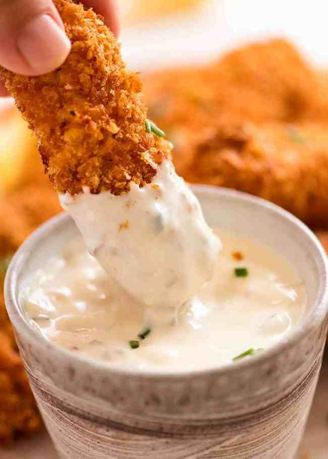

Fish fingers

Fish fingers
Fish Fingers so perfectly golden and crunchy it’s hard to believe they’re BAKED
rather than fried! Breaded white fish baked in the oven using a secret method to
make them super crispy outside and tender on the inside, with the extra bonus
of a mess-free way to coat the fish in breadcrumbs.
Required ingredients:
- 600g / 1.2lb white fish fillets
- Oil spray
Crumb:
- 1 1/2 cups (75g) panko breadcrumbs
- 1/4 cup (25g) parmesan
- 2 tsp paprika
- 1/2 tsp salt and pepper each
Batter:
- 1 egg
- 1 tbsp mayonnaise
- 2 tbsp flour
- 1/4 tsp salt and pepper each
Sauce:
Instructions:
- Toast breadcrumbs: Spread breadcrumbs on tray. Spray with oil, bake 4
minutes until golden. Transfer toasted breadcrumbs into bowl, add
remaining Crumb ingredients and mix.
- Increase oven to 220°C / 425°F (fan 200°C). Spray used tray with oil.
- Batter: Mix Batter ingredients in a separate bowl
- Cut the fish into strips 1.5 x 11 cm / 3/5 x 4.5" (they shink 30% in length).
- Place fish in Batter, gently mix with rubber spatula to coat. Do not
leave sitting around (will become watery), coat immediately.
- Breading: Pick up fish with tongs, place in breadcrumbs. Spoon over crumb,
use fingers to press to adhere.
- Baking: Transfer to baking tray. Spray with oil, bake 13 minutes or untilbr
crispy on the outside.